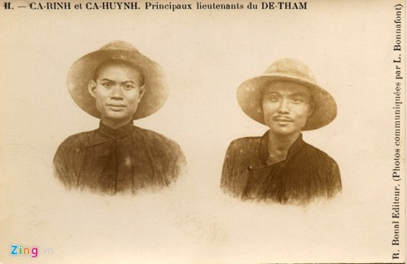

CHƯƠNG II
Hoàng Hoa Thám tên thật là Trương Văn Thám. Cha là Trương Văn Vinh ở thôn Lang Trung (Yên Thế). Mẹ tên là gì không được rõ chỉ được biết rằng là người làng Ngọc Cục gần thôn Lang Trung.

Đề Thám và các con
Năm 18 tuổi, Thám đã lấy vợ và sinh đưọc một con trai lên là Cả Trọng.
Năm 20 tuổi, Thám tình nguyện gia nhập vào đoàn nghĩa binh cách mạng do viên lãnh binh tỉnh Bắc Ninh Trần Quang Soạn điều khiển để chống Pháp.
Lúc này ông hăng hái chiến đấu bên cạnh những nhà cách mạng nổi tiếng như ông Nguyễn Thiện Thuật (làm Tán Tương Quân Vụ nên người ta cũng gọi là Tán Thuật) và Đề Kiều.
Năm 23 tuổi, Thám theo cha nuôi là Ba Phúc đi Vân Nam để vận động nghĩa binh rồi về giúp cho Cai Kinh ở Lạng Sơn.
Cai Kinh nhận thấy Thám còn trẻ tuổi mà có thiên tài về quân sự nên phong cho Thám làm Đốc Binh, vì vậy mà mọi người đã gọi Thám là Đề Thám.
Vào ngày 6 tháng 7 năm 1888, Cai Kinh bị giết ở Lạng Sơn, Đề Thám liền qui tụ một số nghĩa quân để đánh phá các vùng Hiệp Hòa, Quế Dương, Võ Giàng, Việt Yên vân vân…
Bấy giờ, Pháp quân mới hãi kinh lo chống đỡ trước sức tấn công mãnh liệt như vũ bão của quân Thám.
Đồng thời quân Pháp cũng cho họa hình Thám dán khắp nơi để truyền rao treo giải: hễ ai lấy được dầu của Thám thì sẽ được thưởng to…
Tuy vốn là một nông dân áo vải, nhưng Thám có chí hơn người. Sinh ra giữa lúc Pháp quân dẫm gót giày xâm lăng lên trên đất nước Việt, và khi lớn khôn nhìn thấy cảnh máu rơi thịt đổ, non sông gấm vóc điêu tàn, người trai Việt không đành lòng ngồi không mà ngó.
Vì vậy, Thám không nề hà gian nan, nguy hiểm, không màng hạnh phúc vợ con đã sẵn an bày, và cũng không nản chí trước sự uy hiếp và đe dọa của thực dân.
Thám nhất quyết lao mình vào công cuộc trường kỳ kháng chiến, cùng hòa nhịp hi sinh với các đồng chí đang tranh đấu kháng thực rất gian lao ở khắp tam kỳ. Càng ngày, Thám càng bành trướng thế lực.
Đến tháng tư năm 1889, Thám đã qui tụ được hơn 500 tay súng can đảm và một số quân bạch binh đầy thiện chí…
Thám liền tập trung hai nhóm này lại ở làng Đình Thảo thuộc Nhã Nam để làm lễ tế cờ, khao binh và uống máu ăn thề. Xong, Thám chia quân ra lập đồn ải ở khắp vùng Phú Lạng Thương, Thái Nguyên, Vĩnh Phúc Yên, Bắc Giang và chọn Yên Thế làm tổng hành dinh để kháng chiến lâu dài.
Ngoài ra, Thám còn liên lạc và qui nạp thêm một số giang hồ tứ xứ hoặc các anh hùng địa phương để gây thành một thế lực vừa mạnh mẽ bao quát vừa lâu dài.
Trong số người này, quan trọng hơn cả có Lương Tam Kỳ, Đèo Văn Trí, Lục A Sung, Bộ Giáp, Cai Mão vân vân…
Riêng Lương Tam Kỳ, cùng như Lục A Sung, vốn là một viên tướng sớm đầu tối đánh kiêm thổ phỉ thuộc giặc Cờ Đen hồi Lưu Vĩnh Phúc.
Hắn là người Tàu, sau khi thất bại ở những trận đánh tại các vùng Hoa Nam và bị binh triều đình Mãn Thanh rượt, hắn vượt biên giới Việt Hoa để qua miền Thượng du Bắc Việt rồi hùng cứ một mình một cõi ở quận Chợ Chu (Bắc Kạn).
Còn Đèo Văn Trí là người Thái, đứng đầu một khối dân thiểu số cũng ở miền Tây Bắc.
Hồi ấy, các dân tộc thiểu số này chiếm cứ mỗi nhóm một riêng biệt, ở các miền đồng núi.
Họ được triều đình Huế sắc phong đàng hoàng.
Nhưng, tới thời kỳ thực dân Pháp xâm lăng lãnh thổ Việt, muốn cho dễ cai trị và trọn quyền sinh sát, họ tìm cách chia rẽ những dân tộc thiểu số này với nhau và với cả triều đình Huế.
Chánh phủ thực dân cho các dân tộc thiểu số này được tự trị, như một nước nho nhỏ. Nghe qua tưởng chánh phủ thực dân đối xử tốt với các dân tộc thiểu số, chứ kỳ thật trong thâm tâm, chánh phủ thực dân muốn giết hại họ lần lần bằng cách để họ tự cấu xé, bắn giết lẫn nhau.
Vì chánh phủ thực dân cho quyền những kẻ đứng đầu một dân tộc thiểu số hay một khối được quyền mua súng ống, võ trang cho vùng đất mình chiếm ngự, được quyền thâu các sắc thuế như thuề chợ búa, thuề thân, thuể đất vân vân, được quyền buôn á phiện, được quyền tổ chức cờ bạc và trọn quyền sinh sát. Nghĩa là, họ có đủ quyền hành của một ông vua nho nhỏ, muốn làm gì thì làm, muốn gây hấn, tự tung tự tác với các dân tộc khác cùng được.
Vì vậy mà, các dân tộc thiểu số càng ngày càng chia rẽ nhau. Những mối thù hằn dần dần nẩy nở trong lòng họ.
Đối với Triều đình Huế, họ cũng không còn chịu liên lạc mật thiết và thường tỏ ý phản nghịch. Nhờ đó, chánh phủ thực dân mới dễ dàng cai trị.
Để cho những dân tộc thiểu số sát hại lẫn nhau trước thật tàn tệ rồi, chánh phủ thực dân mới ra tay thanh toán những phần tử, những dân tộc nào ương ngạnh còn lại.
Đoán biết được điều đó, Đèo Văn Trì mới nghiêng hẳn về phía nghĩa quân cách mạng Việt Nam để chống Pháp…
Còn những người như Bộ Giáp, Cai Mão là những tay anh hùng nổi lên ở từng địa phương một…
Ngoài ra, Thám còn một người nữa, rất tận tình tận lực giúp Thám. Người này vừa là đồng chí và vừa là người bạn trăm năm của Thám, tên là Đặng Thị Nhu (người ở làng Vạn Vân) mà người ta thường gọi là Cô Ba. Đặng Thị Nhu là người vợ thứ ba của Thám và là em gái nuôi của Thân Văn Luận tức là Thống Luận (có sách cũng gọi là Tổng Luận).
Thêm nữa, Thám còn có nhiều bộ tướng vừa tài giỏi vừa mưu trí thường sát cánh giúp đỡ như: Thống Luận, Tổng Trực, Ba Phúc (cha nuôi) vân vân… cùng hai người con của Thám là Cả Trọng, Cả Rinh…

Hai con của Đề Thám
Những người sau này cùng đồng tâm nhiệt huyết với Thám, cùng chia sớt với Thám bao nỗi gian nguy…
Chỉ có bọn thổ phỉ kiêm tướng giặc sớm đầu tối đánh Lương Tam Kỳ là phản loạn đã giết hại Thám sau này.
Tuy hợp tác với Thám, chúng còn bí mật bắt tay với Pháp để bán những tài liệu bí mật quân sự của Thám cho Pháp.
Những điều này chúng tôi sẽ có dịp nói rõ ở đoạn sau.
Sang năm 1890, Thám nhờ có những tay mưu trí dõng lược hết lòng trợ giúp nên gây được uy tín cá nhân đáng kể.
Bấy giờ, Thám một mặt chống Pháp một cách rất tích cực, một mặt chiêu mộ thêm một số thanh niên có chí đứng vào hàng ngũ nghĩa quân cách mạng.
Công việc quy tụ chiến sĩ chống Pháp này, Thám nhờ một phần lớn ở các tay anh hùng địa phương xúc tiến công việc như Đèo Văn Trí, Bộ Giáp Cai Mão, Ba Phúc, Tổng Trực vân vân…
Chính những người này cũng đem các tay bộ hạ đắc lực của mình cho Thám sử dụng. Lương Tam Kỳ thấy vậy cũng cho một số người của mình qua tăng cường thêm cho Thám. Hơn nữa, Lương Tam Kỳ đưa sang cho Thám hai người tâm phúc giỏi võ của mình để đặc biệt hộ tống và bảo vệ Thám ngày đêm.
Thấy vậy, Thám tưởng Lương Tam Kỳ ở với mình với tất cả tấm lòng chân thành, nên luôn luôn tin cậy mọi việc. Nhưng, Thám không ngờ rằng Lương Tam Kỳ rất gian xảo và hai tên tâm phúc của Lương Tam Kỳ gửi sang “gát đờ co” Thám kia là hai tên hung thần ngày đêm chực hại Thám bất cứ vào lúc nào.
Cũng trong năm 1890 này, chánh phủ thực dân nghe được thế lực của Thám nên hoảng sợ cử đại binh tiến đánh Thám.
Vì lúc đầu tổ chức huấn luyện chưa được qui củ, binh đội còn ô hợp, thêm nữa sức tấn công của quân viễn chinh Pháp rất mạnh mẽ, nhanh chóng và ồ ạt, nên Thám phải rút lui dần.
Quân Pháp tiến tới được gần đại bản doanh của Thám thì Thám đã cho nghĩa quân cách mạng phân tán vào rừng sâu nên Pháp không còn tấn công gì được nữa.
Chuyến thứ nhất này, Pháp tổn hại thật nặng. Vì không quen trận thế và đường đi nước bước trong rừng sâu đầy sình lầy nên binh Pháp chết rất nhiều.
Đến năm 1892, quân đội thực dân lại tấn công Thám một lần nữa, cũng tiến được tới đại bản doanh của Thám.
Lần này, quân đội thực dân bao vây chặt chẽ hơn, vì đã rút được kinh nghỉệm của kỳ tấn công hai năm về trước nên Thám phải khó nhọc lắm mới cho nghĩa binh rút lui được vào rừng.
Lần này cả hai bên đều bị thiệt hại nặng nề.
Nhưng Thám cũng rút thêm nhiều kinh nghiệm về chiến trận.
Thám cho chiêu mộ thêm anh tài ở khắp các nơi, luyện tập binh sĩ hẳn hoi, chuyên chú nhất về khoa du kích chiến lưu động. Từ đây, Thám mới tổ chức binh đội hoàn bị.
Thám lại cho đào thêm hầm hố, lập thêm đồn lũy chiến tuyến bao quanh vùng Yên Thế. Thám cũng cho người đi mua các loại súng ống, đạn dược mới của người Pháp và dự định trường kỳ kháng chiến với Pháp.
Kể từ đây, lịch sử đấu tranh của dân tộc Việt lại được điểm thêm những nét son vàng và thực dân phải trải qua những chuỗi ngày lo sợ, không yên…
Ngoài ra, Thám còn nghĩ những kế hoạch dinh điền để nuôi quân trong thời kỳ kháng Thực và tổ chức buôn lậu để mua khí giới thêm ở bên Tàu đem về võ trang cho nghĩa quân.
Nhận thấy dùng võ lực quân sự để đánh dẹp nghĩa quân của Thám không được, Pháp liền dùng đến những đòn chánh trị đặc biệt và mặt trận chiến tranh tâm lý song song với những công tác hành quân đại quy mô của binh đội.
Pháp liền cử Tổng đốc Lê Hoan tìm cách chia rẽ nghĩa quân bằng những hành động gian trá. Lê Hoan tổ chức những vụ ám sát trong hàng ngũ nghĩa quân rồi tuyên truyền khủng bố dân chúng.
Năm 1893, Tổng đốc Lê Hoan dụ dỗ Ba Phúc (cha nuôi của Thám) đầu hàng rồi tổ chức cuộc ám sát Thám.
Nhưng tổ chức này bị bại lộ, tương kế tựu kế, Thám mai phục đánh úp lại vào khoảng 15 tháng 5 năm 1894, khiến cho Pháp quân và lính khố xanh vừa chết vừa bị thương khá nhiều.
Sáng tháng 8, Thám lại cho xây đắp đồn lũy và đào chiến hào khắp vùng Yên Thế một lần nữa, nhất quyết phòng thủ lâu dài ở vùng này.
Mặt khác, Thám lại sai Đốc Kế, Thống Luận, Đề Huỳnh, Lĩnh Túc, Đốc Thu cùng với nhóm nghĩa quân của Bàng Kình tấn công các đồn lẻ tẻ ở vùng Phú Lạng Thương.
Đồng thờí, Thám cũng ra lệnh cho tấn công các đường giao thông chánh mà quân đội Pháp thường vận tải tiếp tế, cốt để làm suy yếu dần dần các chủ lực quân quan trọng của Pháp gần Yên Thế…
Chánh phủ Pháp liền ra lệnh cho đại tá Grimaud kéo quân đi dẹp nhưng bị thất bại nặng nề ở Bố Hạ nên đại tá Grimaud phải rút quân về.
Năm Tự Đức thứ 36, tức năm dương likch là 1882, Cai Kinh đã phái cha nuôi của Thám là Ba Phúc đến Yên Thế tổ chức khu này thành một chiến khu thứ 3, sau Lũng Lạt (Cai Kinh) và Kẽ Thượng (Ba Ký).
Ba Phúc vào Yên Thế, có Thám theo giúp đỡ rất đắc lực nên chẳng bao lâu đất Yên Thế trở thành một hiểm địa quan trọng bực nhất, đã chôn thây của hàng vạn quân binh trong đoàn quân viễn chinh thực dân vào lúc bấy giờ.
Thuộc vào miền Trung Châu Bắc Việt, Yên Thế cách Hà Nội lối chừng 50 cây số ở về phía Tây Bắc.
Khu vực Yên Thế nằm trọn vẹn giữa dãy núi đá Cai Kinh (Bắc Giang và Lạng Sơn) cùng với dãy núi trùng trùng điệp điệp ở miền thượng lưu sông Thương và sông Cầu.
Yên Thế có hai vùng: Vùng thượng và hạ, mà người ta thường gọi là Thượng Yên và Hạ Yên.
Vùng Thượng Yên là những rừng và rừng… Rừng ở đây rất rậm, cao từ 100 đến 150 thước.
Vùng Hạ Yên là vùng đồng bằng có ruộng xanh, rộng bát ngát. Làng mạc ở đây cũng nhiều, thôn xóm đông đúc, cây cối một màu xanh tươi. Lác đác trong vùng Hạ Yên có một số đồi, cao chừng 50 thước trở lại mà thôi.
Yên Thế có cảnh vật khác hẳn các khu vực đồng bằng thường và hơn nữa cũng không giống cảnh đồi núi hùng vĩ của miền rừng Thượng Du.
Các khu rừng Yên Thế có cây cối rậm rạp vì dày mịt những lá cành, có nhiều lau lách và các loại nứa, tre chằng chịt khắp nơi. Những loại cây này giăng mắc, chằng chịt đến nổi che cản được bóng nắng của mặt trời.
Có thể nói là gần như không có một chỗ nào ánh sáng nắng được rọi tới mặt đất. Vì vậy mà, rừng Yên Thế rất ẩm ướt dầy rẫy những loại muỗi mòng, vắt, rắn rết và cùng những loại côn trùng nhỏ độc địa… Trong một năm rừng Yên Thế chỉ hơi khô ráo được có lối 4 tháng trở lại mà thôi.
Tất cả các nơi trong rừng đều ngột ngạt, đầy chướng khí, độc địa. Những ai rũi lở bước lạc vào đều có thể bị vướng những chứng bịnh khó chữa trị, có thể chết bất ngờ.
Rừng Thượng Yên quả thật là một địa ngục trần gian, là vùng đất chết của dòng họ Thực.
Phía Tây Yên Thế giáp với Bắc Kạn và Thái Nguyên còn phía Đông giáp Lạng Sơn. Phía Nam giáp Bắc Giang và Đáp Cầu - Bắc Ninh. Còn phía Bắc thí dính vào Thất Khê và Cao Bằng. Nơi đây là một vùng núi non hiểm trở cheo leo. Ghềnh thác quanh co và có những đường ăn lòn qua miền đất thuộc nước Tàu dính vào nhau như màng nhện.
Cả Kinh đã chọn nơi này làm chốn dụng võ khởi binh kháng Thực thật là người tinh tế.
Đã vậy, người nối chí, đi theo con đường của Cả Kinh là Đề Thám lại càng tinh tế, tài tình hơn. Vì Đề Thám đã biết sử dụng khéo léo được tất cả các ưu điểm về địa hình, địa vật ở đây trong thời gian 31 năm trời kháng chiến (1882 - 1919).
Đề Thám đã biến Yên Thế thành một chiến khu có hai đặc điểm rất lợi hại về mặt quân sự: Hiểm trở và thông suốt. Nhờ đó, nghĩa quân có thể giữ thế công hay thế thủ cũng được dễ dàng.
Như vậy, Yên Thế đã có được hai đặc điểm lợi hại nhất trong 6 địa hình binh pháp. Nhất là, hai đặc điểm này rất thích hợp với lối đánh du kích sở trường của nhóm nghĩa quân cách mạng.
Tại nơi này, nghĩa quân có thể tiến thoái bất cứ vào lúc nào và có thể làm cho địch quân không thể nào xoay trở được.
Nhờ những đặc điểm kể trên mà bắt đầu từ năm 1886, nghĩa binh càng lúc càng bành trướng thêm lên. Thường, nghĩa binh phát xuất từ nơi đây để đi chặn đánh những chuyến xe lửa Hà Nội - Lạng Sơn hoặc những chuyến ngược lại. Những chuyến xe lửa này là mạch máu giao thông của quân đội Pháp từ đồng bằng lên miền Thượng Du Bắc Việt.
Ngoài ra, nghĩa quân còn uy hiếp thường xuyên các đồn Pháp đóng lẻ tẻ ở vùng đồng bằng, Trung châu và nhất là các vùng Bắc Ninh và Bắc Giang cùng Vĩnh Phúc Yên.
Các đồn Pháp ở những nơi này luôn luôn phải đặt trong tình trạng nguy ngập báo động.
Thêm nữa, những chiến lũy của nghĩa quân từ trong rừng sâu, cứ lần lần rộng mở tầm hoạt động đến tận Đáp Cầu (Bắc Ninh) khiến cho các vị chỉ huy quân đội Pháp lúc nào cũng lo ngại.
Bởi, những nơi này lại là những yếu điểm quan trọng của Pháp có nhiều đồn binh đống gần nhau nhưng rất mong manh.
Vì vậy, chiến khu Yên Thế đã làm thất điên bát đảo chánh phủ và quân đội Pháp trong một thời gian 20 năm dài (bắt đầu từ năm 1890 đến 1910).